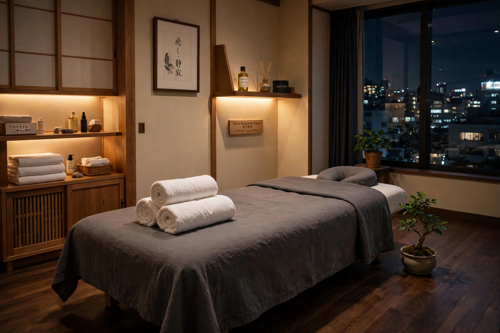

ACCESS ｜ 東三国・新大阪
アクセス・店舗案内東三国・新大阪の男性専用整体院 北辰堂

北辰堂は、大阪メトロ御堂筋線「東三国駅」より徒歩圏内、大阪市淀川区東三国二丁目の男性専用整体院です。新大阪・江坂方面からもアクセスしやすい立地で、営業は平日・土曜の夜と日曜の昼から。完全予約制で、詳しい住所はご予約確定後にLINEでご案内します。
対象
男性専用
営業時間
平日・土曜 17:00〜22:00／日曜 10:00〜22:00
料金
60分 初回2,000円〜・90分 初回3,000円〜
お支払い
現金のみ・完全予約制
店舗の基本情報
- 所在地
- 大阪市淀川区東三国二丁目（プライバシーへの配慮のため、詳しい住所はご予約確定後にLINEでご案内します）
- 最寄り駅
- 大阪メトロ御堂筋線「東三国駅」より徒歩圏内。新大阪・江坂方面からもアクセスしやすい立地です
- 営業時間
- 平日・土曜 17:00–22:00／日曜 10:00–22:00（完全予約制）
- 営業日
- 平日・土曜・日曜（日曜のみ10:00開始）。空き状況はLINEでご確認ください
- ご予約
- LINE公式アカウント（北辰堂）のみで受け付けています（電話予約は行っておりません）
- お支払い
- 現金のみ（当日払い）
- 対象
- 男性専用（男性スタッフ1人で運営しているため）
住所を公開していない理由と、当日のご案内
プライバシーへの配慮のため、詳しい住所は公開していません。ご予約が確定した方にのみ、LINEで詳しい住所と建物の目印を写真付きでお送りします。受付でのご案内から施術まで施術者本人が対応し、他のお客様と顔を合わせることはありません。近隣は住宅地です。来店・退店の際は、大きな声での会話など、近隣へのご配慮をお願いします。
来店前のお願いと確認事項
当日の持ち物・服装
- 持ち物は特にありません。施術用の着替えをご用意しています
- 整体は着衣のままでも受けられます。動きやすい服装だとスムーズです
- 貴金属・時計は施術前に外していただきます
- 施術前後の水分補給をおすすめします（お水をご用意しています）
- 到着はご予約時間の5分前を目安にお願いします（早すぎる到着は準備中の場合があります）
- シャワーのご用意はありません。オイル施術の場合はホットタオルで拭き取りを行います
- 専用駐車場はありません。お車の方は近隣のコインパーキングをご利用ください（自転車はご予約時にご相談ください）
事前にご相談ください
- 発熱がある、体調がすぐれない日は無理せず日程変更をご連絡ください
- 飲酒直後の施術はお断りしています
- 骨折・脱臼・急性の炎症、手術直後の方は事前にお知らせください
- 皮膚に炎症や傷がある部位は施術を避ける場合があります
- 妊娠中の方、高血圧などで通院・服薬中の方は、予約時に一言お知らせください
- ペースメーカー等の体内機器がある方は整体の内容を調整します
キャンセル・変更について
北辰堂は1日数名のみの受付のため、変更・キャンセルは分かった時点でLINEへご連絡ください。当日キャンセルが続く場合は、次回以降のご予約をお断りする場合があります。施術者側の都合で変更をお願いする際は、代替日時を優先的にご案内します。